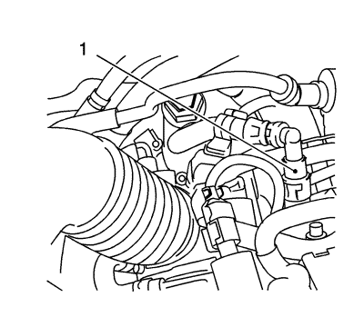
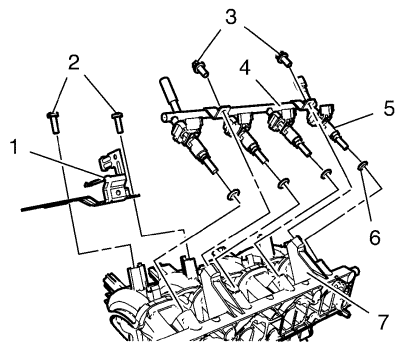
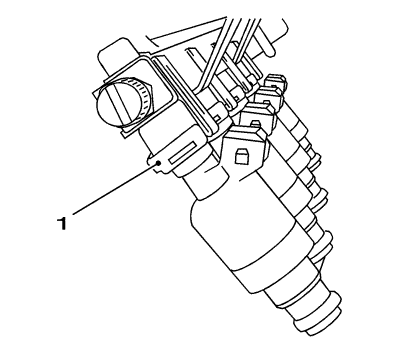

Sustitución del inyector de combustible 1.6L LDE, LXV y 1.8L 2H0
Herramientas especiales
| • | EN-34730-91 Comprobador de la presión de combustible |
| • | CH-807 Tapones de cierre |
| • | CH-41769 Conjunto de herramientas de separación de la tubería de combustible |
Si desea informarse sobre herramientas regionales equivalentes, consultar Herramientas especiales .
Procedimiento de desmontaje
- Abra el capó.
- Desconecte el cable negativo de la batería. Consultar Desconexión y conexión del cable negativo de la batería .
- Retire el tubo de ventilación positiva del cárter del cigüeñal. Consultar
Sustitución del tubo/tubería/tubo flexible de ventilación positiva del cárter del cigüeñal : 1.6L LDE, LXV y 1.8L 2H0 .
- Desconecte el mazo de cables de:
| 4.1. | La válvula de purga de emisión de vapores |
| 4.2. | Válvulas de inyección de combustible |
| 4.3. | El sensor de presión absoluta del colector |
- Coloque un recipiente recogedor debajo.
Advertencia: La gasolina o los vapores de gasolina son muy inflamables. Puede producirse un incendio si existe una fuente de chispa. Nunca vacíe o almacene gasolina o combustible diesel en un recipiente abierto debido al riesgo de explosión o incendio. Disponga de un extintor de incendios químico seco (clase B) en las proximidades.
- Descargue presión de combustible con la conexión de comprobación y el manómetro EN-34730-91.

- Abra el cierre rápido del tubo de alimentación de combustible (1) con el juego de herramientas CH-41769.
- Monte y tape el tubo de alimentación de combustible con el tapón CH-807.

- Desmonte los 2 tornillos del soporte de la válvula solenoide de purga del depósito antiimpurezas de emisión de vapores (2).
- Desmonte el soporte de la válvula solenoide de purga del depósito antiimpurezas de emisión de vapores (1) del colector de admisión (7).
- Desmonte los 2 tornillos del tubo de distribución de inyección de combustible multipuerto (3).
- Extraiga el tubo de distribución de inyección de combustible multipuerto (4) con los inyectores de combustible (5) del colector de admisión (7).
- Desmonte las 4 juntas de los inyectores de combustible (6).

- Desmonte el anillo de seguridad del inyector de combustible (1).
- Desmonte los inyectores de combustible.
Procedimiento de montaje
- Monte los inyectores de combustible.
Nota: Monte las juntas nuevas de los inyectores de combustible y cubra las juntas de los inyectores de combustible multipuerto con grasa de silicona.
- Monte el anillo de seguridad de los inyectores de combustible (1).
Nota: Cubra las juntas de los inyectores de combustible con grasa de silicona
- Monte las 4 juntas NUEVAS de los inyectores de combustible (6).
- Monte el tubo de distribución de inyección de combustible multipuerto (4) y los inyectores de combustible (5) del colector de admisión (7).
Precaución:Consulte Precaución con las fijaciones en la sección Prólogo.
- Monte los 2 tornillos del tubo de distribución de inyección de combustible multipuerto (3) y apriételos a8 N·m (71 lib. pulg.).
- Monte el soporte de la válvula solenoide de purga del depósito antiimpurezas de emisión de vapores (1) en el colector de admisión (7).
- Monte 2 tornillos de soporte de la válvula solenoide de purga del depósito antiimpurezas de emisión de vapores (2) y apriételos a 8 N·m (71 lib. pulg.).
- Quite el tapón CH-807.
- Conecte el cierre rápido del tubo de alimentación de combustible (1).
- Conecte el mazo de cables a:
| 10.1. | La válvula de purga de emisión de vapores |
| 10.2. | Válvulas de inyección de combustible |
| 10.3. | El sensor de presión absoluta del colector |
- Monte el tubo de ventilación positiva del cárter del cigüeñal. Consultar
Sustitución del tubo/tubería/tubo flexible de ventilación positiva del cárter del cigüeñal : 1.6L LDE, LXV y 1.8L 2H0 .
- Conecte el cable negativo de la batería. Consultar Desconexión y conexión del cable negativo de la batería .
- Cerrar el capó.
| © Copyright Chevrolet. Reservados todos los derechos |